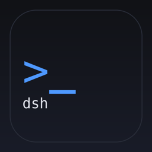
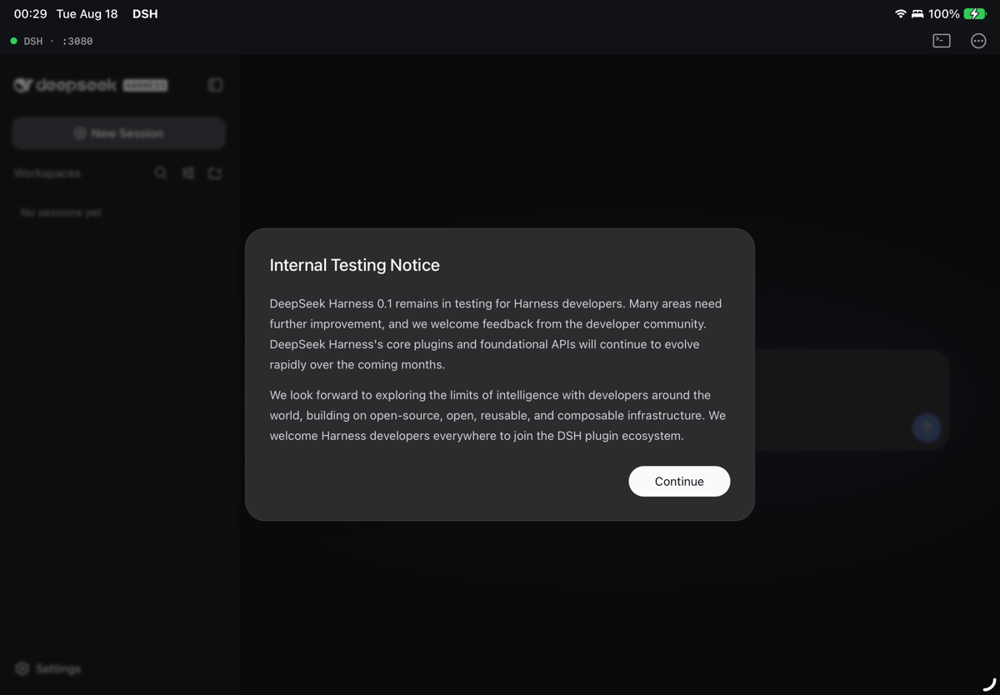
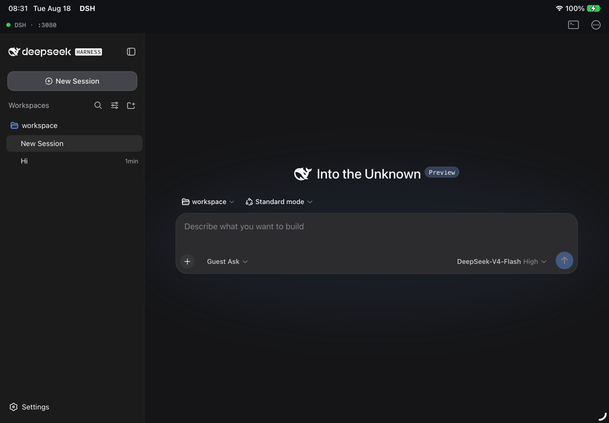

dsh-ios — DeepSeek Harness on iPad & iPhoneRun DeepSeek Harness entirely on your device. A native iOS app embeds the iSH‑ARM64 Linux emulator, boots Alpine + Node 22 + dsh, and shows the harness's own web UI. No jailbreak, no server, no Mac in the loop.


Alpine 3.21 (aarch64), Node.js 22 and @deepseek-ai/dsh run inside the app in the iSH‑ARM64 userspace emulator. Only model API calls leave the device.
A WKWebView shows dsh's own web app served on loopback — sessions, workspaces, tools, permission presets, everything.
The >_ button opens an Alpine terminal in the same guest: apk add, npm i -g, poke at ~/.dsh.
Free‑port selection, HTTP readiness probe, crash restart with back‑off, foreground health check, live log tail on the startup overlay.
A new guest image in an app update is imported as a fresh root; your sessions, credentials and workspace migrate automatically.
Jitless Node has no WebAssembly, so DSH ships a fetch() polyfill with real streaming bodies — LLM SSE works, and a mock‑server test proves it.
┌─ DSH.app ────────────────────────────────────────────────────────┐ │ DSHRootViewController ──► WKWebView ──► http://127.0.0.1:3080 │ │ │ ▲ │ │ DSHHarness (port pick · readiness probe · restart · health) │ │ │ ISHShellExecutor │ loopback │ │ ┌──────▼──── iSH-ARM64 emulator (Alpine 3.21 aarch64) ───────┐ │ │ │ /usr/local/bin/dsh-serve │ │ │ │ → node --expose-internals @deepseek-ai/dsh web │ │ │ │ --host 127.0.0.1 --port N ─────────────────────────┘ │ │ └────────────────────────────────────────────────────────────┘ │ └──────────────────────────────────────────────────────────────────┘
The guest image is built reproducibly on the Mac inside the same emulator and shipped as root.tar.gz. Getting here needed a handful of emulator fixes that are part of the repo: missing NEON conversion instructions used by libvips/sharp, an FMOV‑immediate decoding bug that broke ordinary float constants, a waitpid() EINTR bug that broke gcc and node‑gyp, and the streaming fetch polyfill.
# macOS on Apple Silicon, Xcode 26/27, brew install meson ninja, Node ≥ 20, gem install xcodeproj git clone git@github.com:everettjf/dsh-ios.git && cd dsh-ios/dsh-ios make emulator # iSH-ARM64 CLI + fakefsify make rootfs # build/root.tar.gz — Alpine + Node 22 + dsh (~95 MB, ~6 min) open DSH.xcodeproj # DSH scheme → your iPad → Run (or: make run TEAM=… DEVICE=…) make test # emulator + rootfs + XCTest/XCUITest on the simulator, unattended
| Suite | Covers |
|---|---|
tests/emu-test.sh | NEON gadgets & FMOV fix (C compiled with gcc inside the guest), waitpid regression, fetch polyfill |
tests/rootfs-test.sh | image import, guest self test, profile patch, headless LLM round trip through a mock DeepSeek SSE server, server reachable over loopback |
DSHTests | port allocator, log ring, readiness probe, supervisor state machine; guest integration on simulator/device |
DSHUITests | boots to the DeepSeek Harness UI, log sheet, terminal sheet |